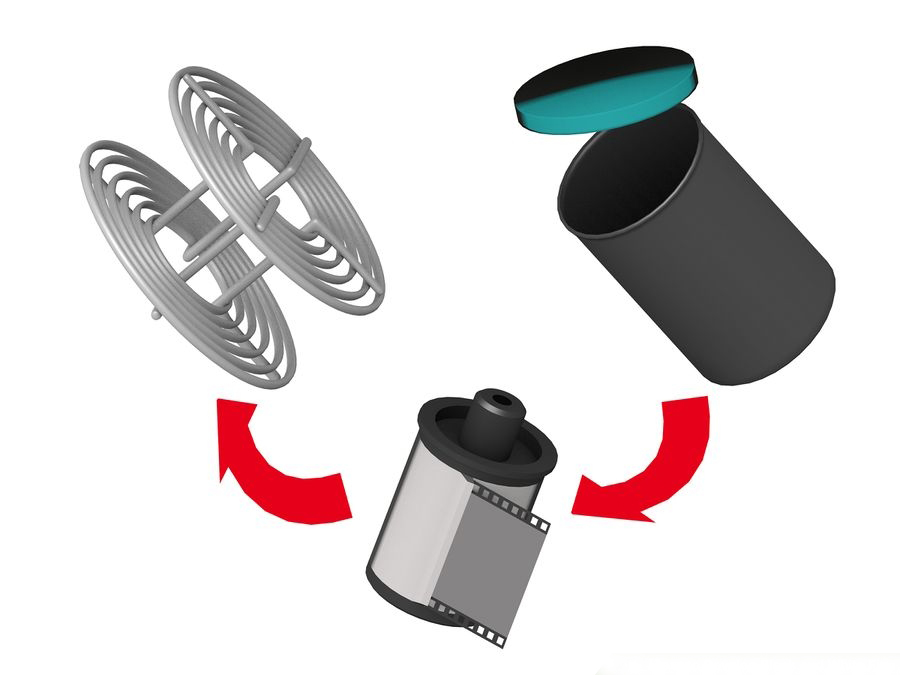
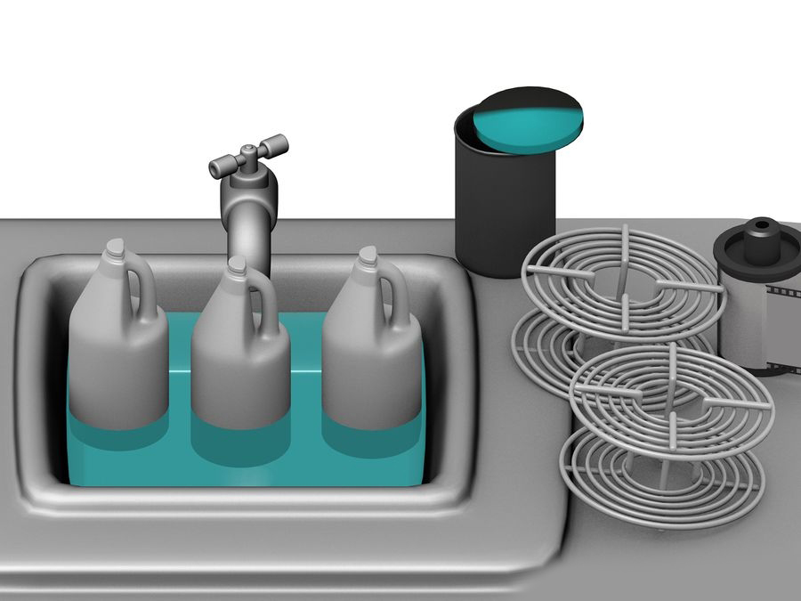

Pop open the film canister, remove the film and load it onto the film reel, and place the reel inside the developing tank.
This must be in complete darkness. No light whatsoever. No red safety lights either. Take the scissors, bottle opener, film canister, film reel, and developing tank into a dust free room that you can make light-tight. For the moment, you can have the room lights turned on.

Place the tools out in front of you, possibly on a desk.
You're going to be loading the film onto the reel in complete darkness, so make sure you lay the tools out in such a way that you can find them in the dark.
